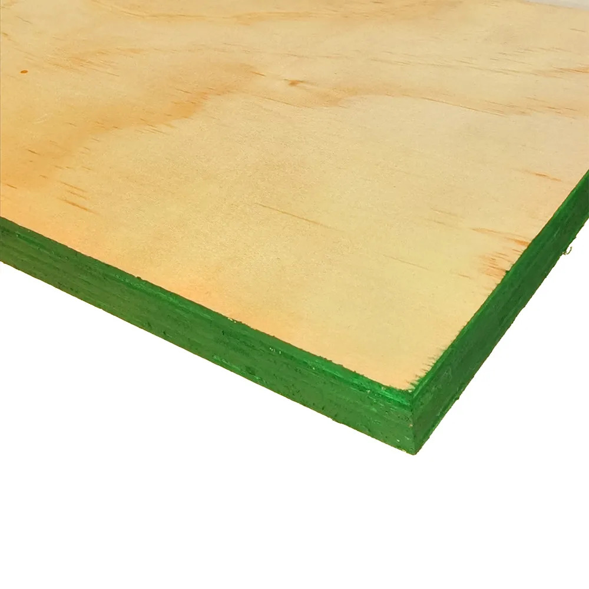

Tablero de triplay fenólico de 18 mm

Tablero compuesto por chapas de madera adheridas entre sí y recubierto con una película superficial. Se utiliza en encofrados y otras aplicaciones compatibles con su resistencia y acabado. Los paneles se apilan horizontalmente para su almacenamiento.